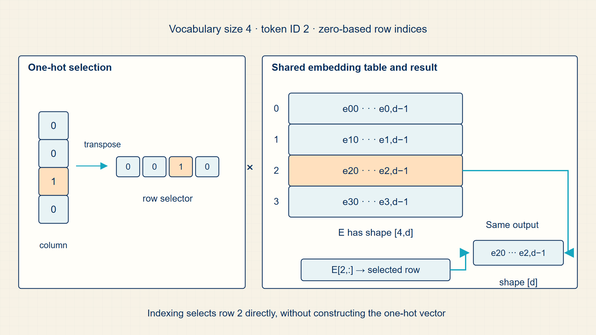
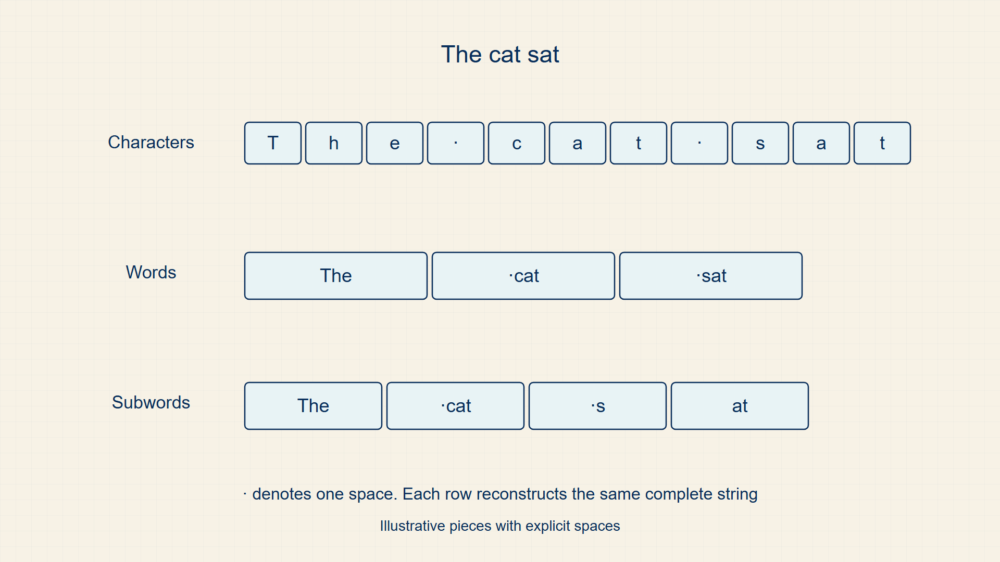

4 Count vectors and TF-IDF
Document terms need shared feature coordinates before the same classifier weights can score texts of different lengths.
A document classifier must compare texts of different lengths and contents. Token IDs preserve each sequence, but the token at the first position can differ between documents. A fixed feature vocabulary supplies a different representation: each coordinate records the same term across all documents.
Count vectors and term-frequency weights make that comparison possible. Stacking document rows forms a matrix, and shared classifier weights turn those rows into class scores. The information omitted by counts determines when another representation may be useful.

4.1 Counting words and phrases
Suppose a sentiment classifier must compare reviews using the words they contain. The review good service should place evidence for good in the same coordinate as good food. A count vector fixes a vocabulary coordinate for each retained term and records how often it appears. Words whose occurrence differs between classes can help distinguish them.
A bag-of-words representation counts terms without preserving their full order. A count vector stores those counts in a fixed coordinate order. It is usually sparse, meaning that most entries are zero, because a document uses only a small part of the vocabulary.
Section 3.4 defined an n-gram as a contiguous sequence of tokens. Treating an entire phrase as a feature preserves some local order. A feature for not good can distinguish that phrase from good alone. It still cannot capture a dependency outside the chosen window.
Fitting a vectorizer builds its feature vocabulary from training text. Transforming later text uses the same vocabulary and coordinate order. This distinction preserves the input meaning expected by a trained classifier. An unseen term contributes no feature if it is absent from that vocabulary. Refitting on validation text would change the representation and use held-out information when constructing it.
For document \(d\) and the vocabulary token \(t_j\) assigned to coordinate \(j\), the count is written as \(\operatorname{BoW}(d)_j\):
Bag-of-words count:
\[ \operatorname{BoW}(d)_j=\operatorname{count}(t_j\in d) \tag{4.1}\]
Each occurrence of \(t_j\) adds one to coordinate \(j\). Repeating this count for all vocabulary entries produces the document vector.
For an \(n\)-gram \(g\) in document \(d\), the feature \(\phi_{\mathrm{ngram}}(d)_g\) counts matching \(n\)-token windows:
N-gram feature:
\[ \phi_{\mathrm{ngram}}(d)_g=\operatorname{count}(g\in d) \tag{4.2}\]
Sliding the window across the document locates occurrences of \(g\). Each matching window adds one to its feature coordinate.
Example: Distinguishing a phrase from one of its words
Bag-of-words count:
For document \(d\) equal to not good service and vocabulary term \(t_j\) equal to good, one position adds one. This gives \(\operatorname{BoW}(d)_j=1\). The document good service gives the same value in the good coordinate.
N-gram feature:
The phrase feature not good has value 1 for not good service and 0 for good service. It therefore records the local order that changes the sentiment meaning in this pair.
Conclusion: The individual good count cannot distinguish these two documents, while the not good feature can. Phrase features preserve order only inside their chosen windows. These feature values are classifier inputs, distinct from the conditional probabilities calculated from histories in §3.4.
The document vectors can now be collected as matrix rows. Their common vocabulary fixes the column meanings, while the weighting rule determines how strongly each occurrence contributes.
4.2 Document matrices and TF-IDF
A collection of count vectors is useful only if its columns agree. Otherwise multiplying every row by the same weights could treat a cat count as a dog count in another document. A document-term matrix stacks document vectors as rows, with the same feature assigned to each column.
This rectangular layout differs from the token batch in Chapter 2. There, columns represented sequence positions and padding equalized their count. Here, columns represent vocabulary features. A zero means that a feature is absent, even in a long document. Shorter documents do not need placeholder words to produce fixed-width feature rows.
A sparse matrix format stores nonzero values together with indices that locate them. If a document contains 20 of 50,000 vocabulary terms, storing those entries can save space compared with storing 50,000 values. The extra indices have a cost, and sparse operations help only when supported by the receiving library and suitable for the data. The mathematical matrix still contains zeros at the omitted coordinates.
For \(N\) documents and \(|V|\) vocabulary features, the matrix dimensions are:
Feature batch:
\[ X\in\mathbb{R}^{N\times\lvert V\rvert} \tag{4.3}\]
This chapter also uses \(B\) for the number of document rows in a processed batch. The symbol \(T\) remains reserved for sequence length. The fixed column count lets the same classifier weights multiply every document row in §4.3.
Raw counts can give common words large values even when they tell little about a document’s topic. Term frequency and inverse document frequency (TF-IDF) weights each term count by its rarity across the fitted corpus. A document frequency counts how many documents contain the term at least once, rather than how often it occurs within one document.
TF-IDF:
\[ \mathrm{tfidf}_{d,j}=\mathrm{tf}_{d,j}\log\left(\frac{N}{\mathrm{df}_j}\right) \tag{4.4}\]
where \(\mathrm{tf}_{d,j}\) is the raw count of term \(j\) in document \(d\). \(\mathrm{df}_j\geq1\) is the number of fitted documents containing that term. \(N\geq1\) is the number of fitted documents, and \(\log\) is the natural logarithm. An unseen term has no fitted document frequency, so validation and test text must retain the training vocabulary. The natural logarithm compresses large ratios. When a term occurs in all fitted documents, \(N/\mathrm{df}_j=1\) and this formula gives it zero weight. Rarity is only a heuristic for usefulness: a rare typo can also receive a large weight.
Example: Feature batch
For 10 documents and a 500-word vocabulary, \(X\) has dimensions \(10\times500\). Each document supplies one row with 500 defined coordinates, regardless of its token count.
Conclusion: The row count follows the number of documents, while the column count follows the fixed vocabulary. Unlike a token batch, this matrix needs no padding because zero records an absent feature.
Example: TF-IDF
If \(\mathrm{tf}=3\), \(N=100\), and \(\mathrm{df}=10\), then \(\mathrm{tfidf}=3\log(10)\approx6.91\). The term scores highly because it appears three times here but in only one tenth of the fitted documents.
Conclusion: This term receives about 6.91, while a term appearing in all 100 documents would receive zero under this formula. The comparison shows how document frequency changes the weight.
The Python machine-learning library scikit-learn, imported through sklearn, provides CountVectorizer and TfidfVectorizer for constructing these features. The scientific computing library scipy provides sparse matrix storage through scipy.sparse.
The runnable scikit-learn example fits a vocabulary and TF-IDF weights on three training documents. Its ngram_range=(1, 2) includes individual words and bigrams. fit_transform fits the training representation and produces its matrix. transform applies that saved representation to one new document. Words or bigrams absent from the fitted vocabulary have no column and are omitted from the transformed row.
The library uses a different TF-IDF convention from the simple equation above. By default, its inverse-document-frequency factor is \(\log((1+N)/(1+\mathrm{df}_j))+1\). It then divides each nonzero row by its Euclidean length, the square root of the sum of squared entries. This normalization puts rows on a common length scale. These defaults explain why the code’s weights need not equal the earlier \(6.91\) calculation. The illustrated library defaults also retain the outer \(+1\) when smoothing is disabled. They therefore do not reproduce the earlier unsmoothed formula merely by setting smooth_idf=False.1
The code uses the fitted representation for both training and new text. Its toarray() calls display the count and TF-IDF values for these tiny matrices so their weighting can be compared. Converting a large sparse matrix to a dense array would allocate storage for every coordinate.
Code example: Count and TF-IDF matrices with a fixed training vocabulary
from sklearn.feature_extraction.text import CountVectorizer, TfidfVectorizer
train_documents = ["cat sat", "dog sat", "cat chased dog"]
new_documents = ["dog chased cat"]
counts = CountVectorizer(ngram_range=(1, 2))
X_count = counts.fit_transform(train_documents)
tfidf = TfidfVectorizer(vocabulary=counts.vocabulary_, ngram_range=(1, 2))
X_tfidf = tfidf.fit_transform(train_documents)
X_new_tfidf = tfidf.transform(new_documents)
print(counts.get_feature_names_out())
print(X_count.shape, X_tfidf.shape, X_new_tfidf.shape)
print(X_count.toarray())
print(X_tfidf.toarray())
print(X_new_tfidf.toarray())Conclusion: The count and TF-IDF training matrices both have shape \([3,8]\), while the new-document matrix has shape \([1,8]\). All eight feature columns retain their meanings. Their values differ because counting and TF-IDF answer different weighting questions. This small corpus demonstrates representation, not classifier quality.
The resulting features are ready for a classifier to combine into scores, using the same learned weights for every document row.
4.3 From features to class scores
A review’s features record evidence for a classification, but a decision still requires a rule for combining their values. A linear classifier attaches a learned weight to each feature for each class. Adding the weighted contributions produces one score per class and shows how each word count affects that score.
A class-weight matrix stores one weight per feature and class. Its row for a feature describes that feature’s contribution to every output class. A bias is a class-specific value added independently of the input features.
Let \(X\) store the document rows and \(W\) the weights. Their feature coordinates must agree. For one document and one class, the dot product of its row and the corresponding weight column sums their paired feature-weight products. Adding the bias gives the score. Matrix multiplication performs all those dot products together.
The resulting score matrix is \(Z\). Each class score is a logit, a score before conversion to classification probability. These scores can be negative and need not sum to 1. The larger score favors a class, but is not itself a probability. Chapter 5 develops the geometry of the linear rule, and Chapter 6 develops probability conversion.
Changing the vocabulary or its coordinate order changes what each column means. It requires compatible weights, even when the number of columns remains unchanged.
The dimensions below express that agreement between the feature axis of \(X\) and the vocabulary axis of \(W\).
Vocabulary features to class scores:
\[ \begin{aligned}&Z=XW+b,\\&X\in\mathbb{R}^{B\times\lvert V\rvert},\quad W\in\mathbb{R}^{\lvert V\rvert\times C},\\&b\in\mathbb{R}^{C},\quad Z\in\mathbb{R}^{B\times C}\end{aligned} \tag{4.5}\]
Here \(B\) counts documents, \(|V|\) counts vocabulary features, and \(C\) counts output classes. The bias vector \(b\) has one entry per class. Adding it to \(XW\) repeats that vector across the document rows, an operation called broadcasting.
For document \(n\) and class \(k\), the entry \(Z_{n,k}\) starts with the dot product of row \(X_n\) and column \(W_{:,k}\). Adding the class bias \(b_k\) gives the score. The index \(n\) identifies a document, while \(b\) denotes the bias vector.
Each dot product sums over vocabulary features. The result retains one entry per document and class, with no separate vocabulary axis.
Example: Vocabulary features becoming class scores
A fixed classifier receives two document count rows with feature order [cat, sat, dog]. It scores class 1 and class 2 using the supplied weights below. This is an inference calculation. The calculation uses fixed weights and does not require target labels.
Inputs:
\(X = [[2, 1, 0], [0, 1, 3]]\)
\(W = [[0.5, −0.2], [1.0, 0.4], [−0.5, 0.8]]\)
\(b = [0.1, −0.1]\)
First document:
\(z_{1,1} = 2(0.5) + 1(1.0) + 0(−0.5) + 0.1 = 2.1\)
\(z_{1,2} = 2(−0.2) + 1(0.4) + 0(0.8) - 0.1 = −0.1\)
Second document:
\(z_{2,1} = 0(0.5) + 1(1.0) + 3(−0.5) + 0.1 = −0.4\)
\(z_{2,2} = 0(−0.2) + 1(0.4) + 3(0.8) - 0.1 = 2.7\)
Result:
\(Z = [[2.1, −0.1], [−0.4, 2.7]]\)
Dimensions:
X: [2,3]
W: [3,2]
b: [2]
Z: [2,2]
Conclusion: Each output row contains the two class logits for one document, and each column corresponds to one class score.
The runnable PyTorch calculation creates numerical tensors with torch.tensor. The @ operator multiplies matrices, and + b adds the same class biases to both rows. The assertions check the output shape and its values.
Code example: Vocabulary-feature batches mapped to class logits
import torch
# Rows are documents. Columns are vocabulary features.
X = torch.tensor([[2.0, 1.0, 0.0], [0.0, 1.0, 3.0]])
W = torch.tensor([[0.5, -0.2], [1.0, 0.4], [-0.5, 0.8]])
b = torch.tensor([0.1, -0.1])
# Matrix multiplication computes every document-class dot product.
Z = X @ W + b
expected = torch.tensor([[2.1, -0.1], [-0.4, 2.7]])
assert Z.shape == (2, 2)
assert torch.allclose(Z, expected)Conclusion: The result is \(Z=[[2.1,-0.1],[-0.4,2.7]]\) with shape \([2,2]\). The supplied rule favors class 1 for the first document and class 2 for the second. Without reference labels, that calculation says nothing about whether either classification is correct.
The example uses a dense tensor for readability. A realistic bag-of-words matrix is usually sparse and may require a sparse-compatible operation.
A score can use only the distinctions retained in its feature row. If two different texts receive identical rows, this fixed affine rule must assign them identical scores. That makes the representation’s omissions relevant before a more elaborate decision rule is chosen.
4.4 The limits of sparse counts
A count-based classifier can learn that both cat and dog favor the same class, but the input representation itself gives them separate coordinates. It also maps dog bites person and person bites dog to identical word counts. These limits matter when a task depends on similarity or who did what to whom.
The sparse storage format in §4.2 omits zero entries and records the positions of stored values. A dense tensor stores every coordinate, including zeros. Changing the storage format preserves the feature values and therefore the same word relationships. Learned text vectors often use fewer coordinates than a vocabulary count row, but their numerical values and training objective determine which relationships they represent.
An embedding associates an object such as a token with a numerical vector. A learned embedding changes during training so that its coordinates support the objective. A coordinate need not correspond to one specific word. Information can be distributed across the whole vector.
Example: Similarity absent from counts
With vocabulary [cat, dog, engine], the one-word documents have count vectors \([1,0,0]\), \([0,1,0]\), and \([0,0,1]\). The dot product of cat with dog is 0. The dot product of cat with engine is also 0. Under this dot-product comparison, the two animals are as dissimilar as the animal and the engine.
For comparison, illustrative dense vectors \([1,0]\), \([0.9,0.1]\), and \([0,1]\) would give dot products 0.9 and 0, respectively. These values were chosen to demonstrate the representation’s capacity, not obtained from a trained model.
Conclusion: Adjustable coordinates can express a relationship missing from raw counts. The usefulness of any relationship obtained during training must still be tested against the task. A dense format does not guarantee semantic quality.
Chapter 13 develops embedding lookup: each token ID selects a row from a table of vectors. Chapter 14 shows how a training objective can shape those vectors. Embedding lookup alone gives the same initial vector to repeated uses of a token. Later sequence models combine information across positions, so word order can affect their output.
There are two representation routes. A document classifier can use the sparse feature rows from this chapter directly. A sequence model can map token IDs to embedding vectors without first building a bag-of-words row. The following figure previews that second route. Its contextual vectors incorporate surrounding positions, a mechanism developed in the sequence chapters.

The numerical representation and later context calculations serve different roles. An initial token vector identifies the token through learned coordinates. Combining positions lets the same token contribute differently in different contexts.
The unit counted also changes the original sparse feature design. Character features can share spelling patterns, while word features retain familiar term meanings. Subword features balance vocabulary size against sequence length as Chapter 3 explains.

Each route depends on a stable tokenization and coordinate convention. Count features offer inspectable baselines, while learned representations can capture relationships that fixed term coordinates omit. Both require evidence from the intended task.
The representations in Part I now support two different uses. A linear model can turn their coordinates into scores, while a sequence model can learn representations whose values depend on surrounding positions. Part II develops the first route by connecting linear scores to probabilities, selection, loss, and evaluation.
Chapter checkpoint
A TF-IDF vectorizer is fitted on training reviews, then refitted on validation reviews before those rows are scored by the existing linear classifier. Explain what changed, why equal matrix dimensions would not establish compatible features or an independent validation result, and why sparse counts still cannot represent semantic similarity by themselves.
Answer: Refitting can change the vocabulary columns and document-frequency weights. Equal matrix dimensions do not establish that the vocabulary mapping and fitted IDF weights match those used to train the classifier. Refitting also uses held-out text to fit the representation, violating the training-only fitting protocol. Sparse counts can show which terms occurred, but distinct vocabulary coordinates do not move closer because words are related. Learned vector coordinates can express those relationships if the training objective and data support them. Dense storage alone does not supply similarity or word order.
Scikit-learn developers. (n.d.). Feature extraction: TF-IDF term weighting. Scikit-learn documentation. Retrieved September 24, 2026. The library convention uses an added constant in inverse document frequency and, by default, smoothing and row L2 normalization.↩︎